Overview
현대 자동차는 평균 3만여 개의 부품으로 이루어져 있습니다. 크게 외장(Exterior), 엔진룸(Engine Room), 실내(Interior)로 나눌 수 있으며, 각 부위는 안전·성능·편의를 위해 정밀하게 설계됩니다. 아래 이미지의 핫스팟을 클릭해 각 부위의 이름과 역할을 확인해보세요.
Exterior — 외장 핫스팟
아래 이미지의 포인트를 클릭하세요.

Exterior — 외장 부위
01
후드 Hood
엔진룸을 덮는 금속 패널로, 보행자 보호와 충격 흡수를 위해 설계됩니다.
02
범퍼 Bumper
앞·뒤 충격을 흡수하는 핵심 외장 부품. 삼보모터스의 주력 생산 품목입니다.
삼보모터스 생산 부품
03
펜더 Fender
타이어 위를 덮는 패널로, 이물질이 튀는 것을 막고 차체 라인을 형성합니다.
04
도어 Door
탑승·하차를 위한 패널. 내부에 충돌 빔이 삽입되어 측면 충돌 시 승객을 보호합니다.
05
루프 Roof
차량 상단 패널. 파노라마 선루프·솔라 패널 통합 등으로 진화하고 있습니다.
06
트렁크 Trunk
적재 공간을 덮는 패널. 전동 개폐 기능이 일반화되고 있습니다.
Engine Room — 엔진룸
07
엔진 Engine
연료를 연소시켜 동력을 만드는 심장부. 실린더 수와 배기량으로 출력이 결정됩니다.
08
변속기 플레이트 Transmission Plate
변속기를 차체에 고정하는 핵심 구조 부품. 삼보모터스가 현대·기아에 납품하는 주력 제품입니다.
삼보모터스 생산 부품
09
라디에이터 Radiator
엔진 냉각수를 식히는 열교환 장치. 냉각 성능이 엔진 수명과 직결됩니다.
10
배터리 Battery
전장 부품에 전력을 공급하는 장치. 전기차에서는 주행 동력원이 되는 고전압 배터리팩이 탑재됩니다.
11
에어 필터 Air Filter
엔진으로 유입되는 공기의 먼지·이물질을 걸러내는 부품. 주기적인 교환이 필요합니다.
12
서스펜션 Suspension
노면의 충격을 흡수하고 차체를 지지하는 시스템. 승차감과 조향 안정성을 모두 담당합니다.
Interior — 실내 부위
13
대시보드 Dashboard
운전석 전면 패널. 계기판·공조·인포테인먼트 시스템이 통합된 차량의 컨트롤 센터입니다.
14
스티어링 휠 Steering Wheel
방향을 조종하는 장치. 에어백·오디오·주행 보조 버튼이 통합되며, 열선 기능도 제공됩니다.
15
시트 Seat
탑승자를 지지하는 좌석. 열선·통풍·마사지·전동 조절 기능이 적용되며 안전벨트와 연동됩니다.
16
에어백 Airbag
충돌 시 0.03초 내 전개되어 탑승자를 보호하는 안전 장치. 현재 최대 10개 이상 탑재됩니다.
17
센터 콘솔 Center Console
운전석과 조수석 사이의 공간. 변속 레버·수납함·무선 충전 패드·암레스트가 배치됩니다.
18
인포테인먼트 Infotainment
내비게이션·오디오·공조·차량 설정을 통합한 터치스크린 시스템. 스마트폰 연동이 기본화되었습니다.
Sambo Motors — 삼보모터스
삼보모터스가 만드는 부품
1973년 설립된 삼보모터스는 대구를 기반으로 자동차 핵심 부품을 생산하는 기업입니다. 현대·기아자동차에 범퍼와 변속기 플레이트를 납품하며 국내 시장점유율 85%를 달성했습니다.
범퍼 (Bumper)
전·후면 충돌 흡수 외장 부품. 현대·기아 주요 차종 납품
변속기 플레이트 (Transmission Plate)
1994년 자동변속기 부품 국산화 성공. 정밀 가공 기술력 보유
85%
국내 시장점유율
1973
설립 연도
50년
기술 축적